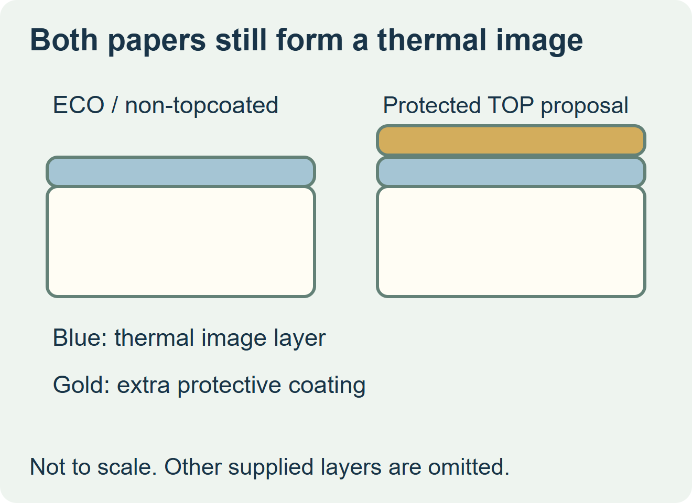
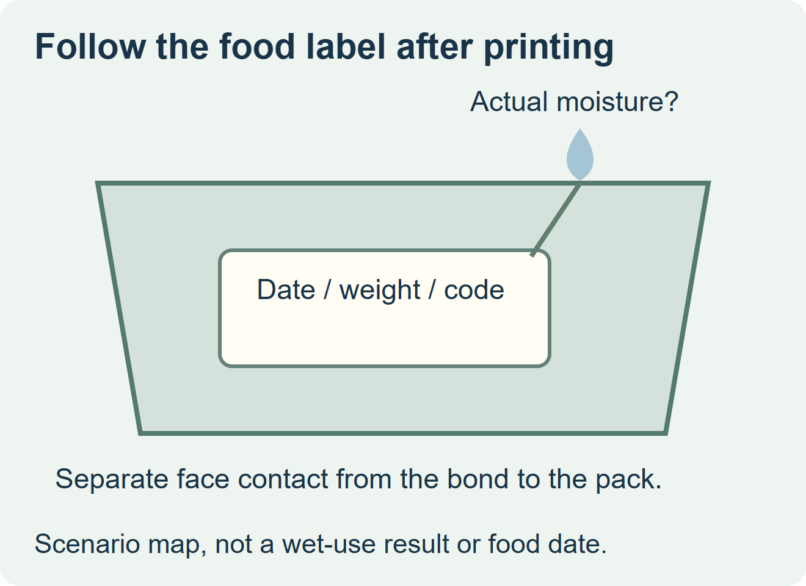

Start with an ECO or other identified non-topcoated proposal for a confirmed short, dry task where the actual printed label meets the required reading interval. Ask for a supported TOP or protective-topcoated grade when moisture, grease or handling contact leaves that proposal unrepresented. Compare the actual samples and offers before choosing. TOP is a material feature to identify, not an unlimited water-resistance or lifespan guarantee.


Non-topcoated does not mean ordinary uncoated paper
Both candidates must be genuine direct thermal media for the intended printer. Their heat-sensitive image-forming layer makes direct thermal output possible without a ribbon. In this comparison, non-topcoated means the identified stock lacks the additional protective surface coating being discussed. It does not mean that ordinary white paper can replace it.
HERMA’s thermal-roll overview distinguishes its ECO papers from TOP papers with added protective coatings. Its examples relate the choice to short-lived dry tasks and more demanding contact conditions. These are supplier-specific grade descriptions, not approval of this order, a universal resistance ranking or confirmation of ZFU stock.
HERMA’s thermal-paper range separately identifies economy grades without protective surface coating and protected grades. Ask for the exact product reference and which sides are coated. Do not assume every seller uses ECO or TOP for an identical construction, and do not transfer a named grade’s food-contact, chemical or certification statements to another label.
Map the contact before paying for a grade change
| Actual packing task | What to resolve in the paper comparison | Useful specimen |
|---|---|---|
| Short dry counter-label use | Does the offered non-topcoated grade represent the full reading interval and handling? | Actual printed label through that ordinary route. |
| Chilled pack handled with visible moisture | Which proposed coating and paper grade address the surface contact? | Printed and applied samples through the real moisture and handling sequence. |
| Greasy exterior or wiping | Is the concern damage to the printed face, or adhesion to a contaminated package? | Identify face damage and package-bond observations separately. |
| Label near heat or strong light | Does the actual direct thermal grade cover the required exposure? | Evidence for that exposure, or another supported printing route if unresolved. |


For a hypothetical prepared-food counter, a tray leaves the dry labeling station and is read soon afterwards. The buyer should not add a protected grade merely because another operation uses one. If the same pack instead enters a chilled display and its label is repeatedly handled while damp, the original dry-task evidence no longer answers the complete requirement. Request a relevant comparison rather than change only the roll description.
Keep the topcoat separate from adhesive and later finishing
A protected print face cannot establish attachment to a wet, oily or unsuitable pack surface. Record the adhesive and application conditions separately. If the label stays attached but its information becomes unreadable, identify the print-face observation; if the whole label lifts, preserve that separate evidence rather than assume a TOP upgrade solves both.
Likewise, an added laminate or a varnish applied during another process is not automatically the same as a paper manufacturer’s protected thermal grade. Ask the material supplier and printer owner which construction supports the intended thermal imaging. This guide gives no coating recipe, printhead setting or instruction to apply a protective layer over an existing roll.
Approve a named paper on the real printer
Request compatible sample rolls with the actual dimensions, backing, adhesive and sensing arrangement. Compare representative date, weight and code fields using the equipment owner’s approved workflow. A loose piece showing a dark mark cannot approve roll feeding, data correctness or finished-package use.
Keep the required image-life interval with the sample record using the linked image-life guide. A coating does not calculate food shelf life or authorize a different date. If the intended contact remains unsupported, ask for another qualified material or printing arrangement rather than increase heat on instinct or call the output waterproof.
Compare complete usable roll supplies on the same quantity basis. Identify the paper reference, protective coating scope, adhesive, liner, conversion, sample work and delivery. ECO is not by itself an environmental claim; TOP is not a promise of infinite durability. Retain the accepted construction and evidence so a reorder cannot silently substitute a different thermal grade.
Discuss the unresolved label requirement
Send printer/scale model, roll and label dimensions, actual ECO/TOP material references, pack surface, printed fields, required reading interval, moisture/grease/wiping contact and quantities. Review food label options and prepare a label specification inquiry. The contact page opens an email draft and lists email or WhatsApp for attachments. Supply, proof options, testing, pricing and timing require project confirmation.